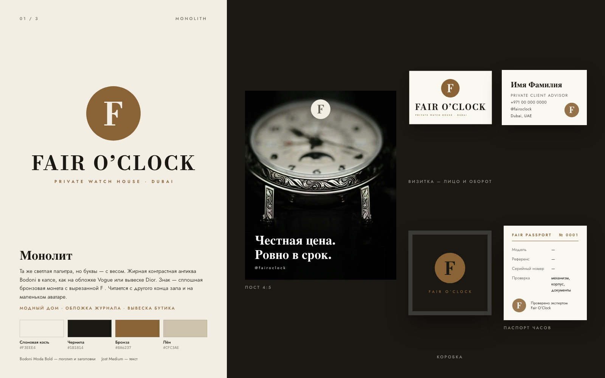
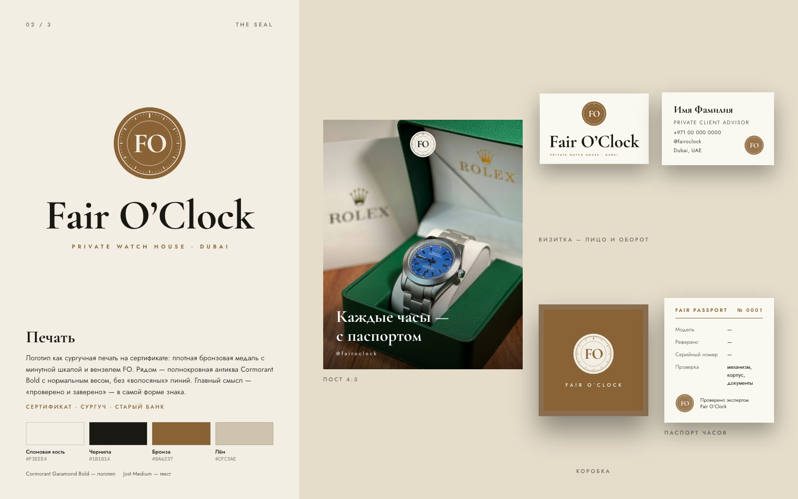
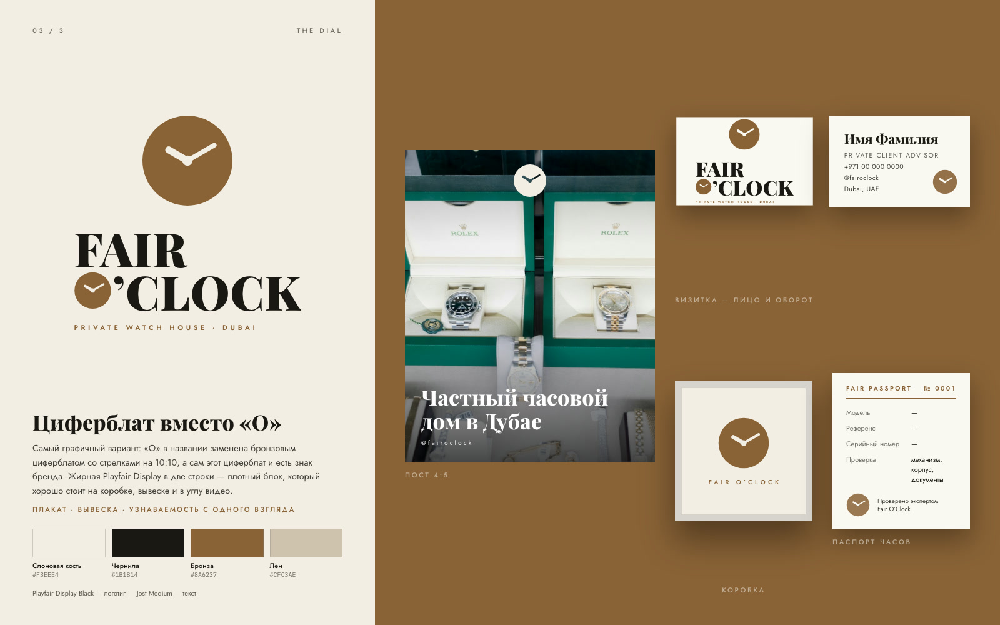

МонолитMonolith

Та же светлая палитра, но буквы — с весом. Жирная контрастная антиква Bodoni в капсе, как на обложке Vogue или вывеске Dior. Знак — сплошная бронзовая монета с вырезанной F . Читается с другого конца зала и на маленьком аватаре.
ПечатьThe Seal

Логотип как сургучная печать на сертификате: плотная бронзовая медаль с минутной шкалой и вензелем FO. Рядом — полнокровная антиква Cormorant Bold с нормальным весом, без «волосяных» линий. Главный смысл — «проверено и заверено» — в самой форме знака.
Циферблат вместо «O»The Dial

Самый графичный вариант: «O» в названии заменена бронзовым циферблатом со стрелками на 10:10, а сам этот циферблат и есть знак бренда. Жирная Playfair Display в две строки — плотный блок, который хорошо стоит на коробке, вывеске и в углу видео.